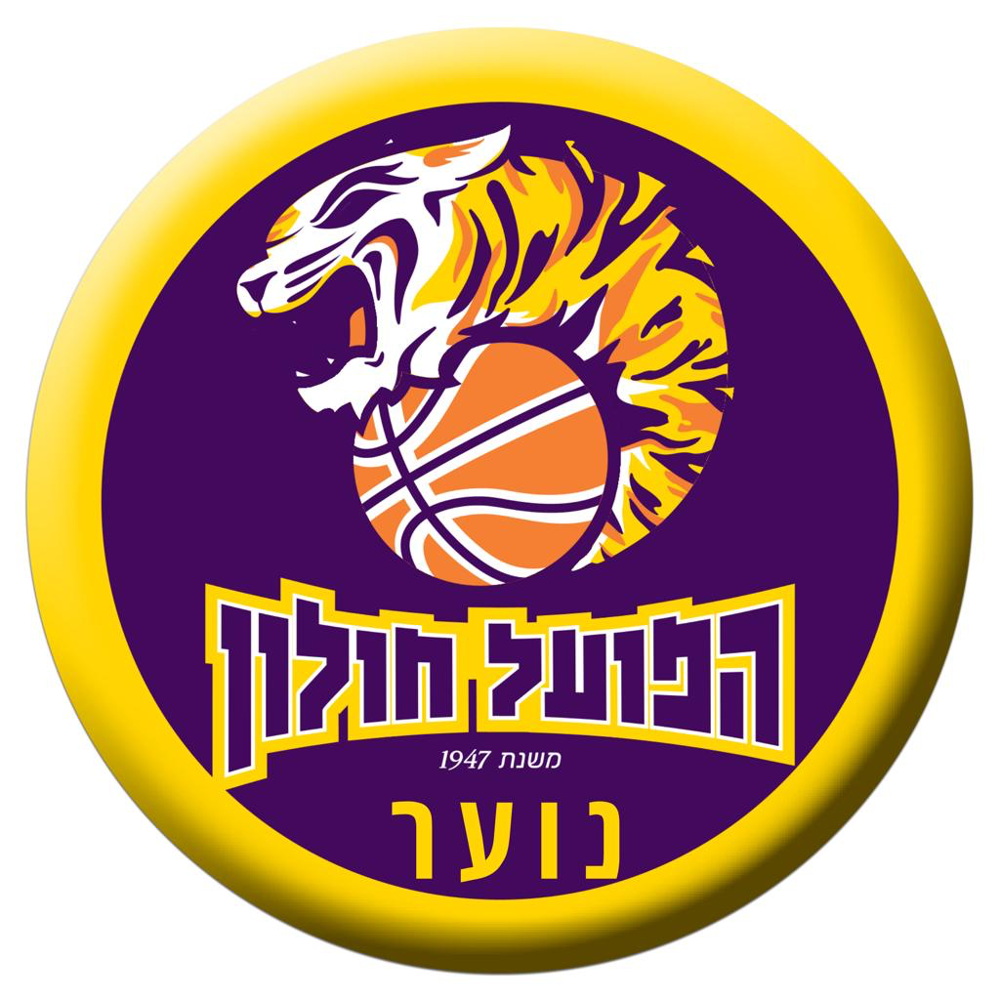

הפועל חולון נוער
משחקים קרובים
משחקים קרובים ותוצאת המשחק האחרון
תוצאות מאומתות מהאיגוד
משחקים קרובים
נערים א׳ לאומית דרום
הפועל חולון אבי · עונת 2026–2027
IBBA
טוען משחקים רשמיים…
לצפייה בטבלת הליגה המלאה ←
תוצאת המשחק האחרון
טוען תוצאות…
מקור הנתונים
תוצאות המשחקים נבדקות מול איגוד הכדורסל ונשמרות באתר. עדכונים חדשים עשויים להופיע באתר האיגוד לפני שהם נקלטים אצלנו. משחקי אימון נשמרים בנפרד.
איגוד הכדורסל ↗
🏠 בית